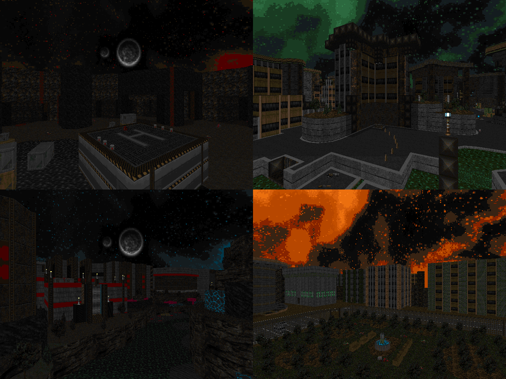

| Year | 2025? |
| IWAD | Doom II |
| Source port | Limit-removing |
| Game mode(s) | Single-player, coop |
| Map(s) | MAP01-13 |
ColdWire is a WIP limit-removing mapset that aims to combine modern visuals with classically inspired
gameplay. Boasting a bespoke custom palette and a tailor-made texture set, the maps in ColdWire aim to
create a strong and inviting atmosphere while keeping the player on their toes with IWAD-esque but nonetheless
thrilling combat. The player is going to traverse through roughly an episode's worth of techbases and urban
environments in search for answers to a traffic accident of historical magnitude.
This time around, I'm not completely alone either; joining me in achieving the aforementioned goal are
guest mappers Salmon and Death Bear. The project is also going to feature a full original soundtrack
by none other than Yours Truly.